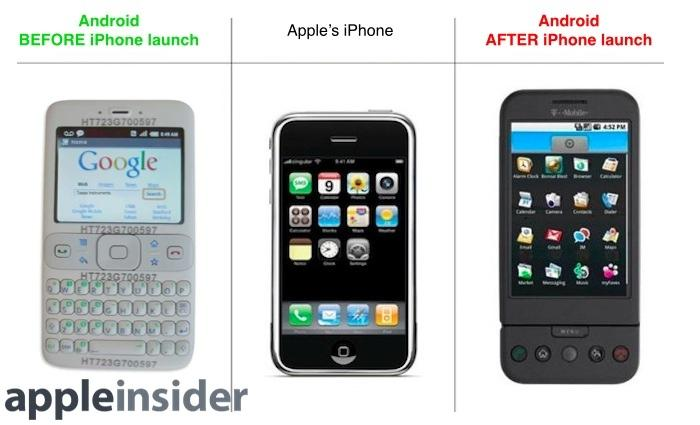

Simulation Reflection: Dominant Design
Help Apple Launch the iPhone
Kate Wang - Penn State University
Dominant Design
Discussion
How would you help Apple launch iPhone as the dominant design?

List on the board
What are the difficulties faced by Apple to launch iPhone as the dominant design?
CEO
How to launch iPhone to make it a dominant design?
CEO Key Takeaways
- Success depends on network externalities, a strong consumer base, and leveraging competitive advantages.
- Position iPhone as the industry standard, not just another product.
CTO
Question: How should Apple Inc. improve the iPhone features?
A:Apple Inc. should imitate existing phones’ design to make consumers accept iPhone faster.
B: Apple Inc. should deviate from existing phones’ design to stand out as unique in the market.
CTO Takeaways
- Balance between imitation for familiarity and differentiation for uniqueness.
- Requires strong development capabilities and thoughtful collaboration strategies.
COO
How should Apple Inc. plan iPhone productions?
A:Apple Inc. should produce iPhone locally to build the loyalty to the product.
B: Apple Inc. should produce iPhone globally to enjoy low production costs.
COO Takeaways
- Global production enables cost efficiency and access to international markets.
- Local production can build loyalty and brand attachment.
CMO
Question: How should Apple Inc. launch the iPhone in the market?
A: Apple Inc. should launch iPhone as a bundle of other Apple products to test water.
B: Apple Inc. should launch iPhone as a stand-alone product to catch attention.
CMO Takeaways
- Launch strategy matters: bundled with ecosystem vs. stand-alone spotlight product.
- Both local and international network effects amplify adoption.
CHRO
Question: How should Apple Inc. attract talent for iPhone productions?
A: Apple Inc. should increase its global hiring to expand the company’s influence.
B: Apple Inc. should increase its local hiring to open the local markets.
CHRO Takeaways
- Global hiring expands influence; local hiring strengthens market access.
- Retaining talent only in Silicon Valley is unsustainable—Apple must spread innovation hubs.
CFO
Question: How would Apple Inc. support the launch of iPhone financially?
A: Apple Inc. should borrow 80% of the funding from banks.
B:Apple Inc. should get 80% of the funding from venture capitals.
CFO Takeaways
- Self-funding and control are crucial.
- External financing (banks or VC) offers growth but risks loss of autonomy.
Key Takeaways: Apple Case Study
Dominant Design
- Learning Effects: Consumers need time and incentives to adapt to new interfaces.
- Network Effects: Widespread adoption depends on ecosystem integration (apps, accessories, developers).
Write down your prompts to describe what are potential dominant designs for your team's technology
Post both the prompt and the results under the in-class prompt discussion for this week
Evaluation
What do you think we can do better?